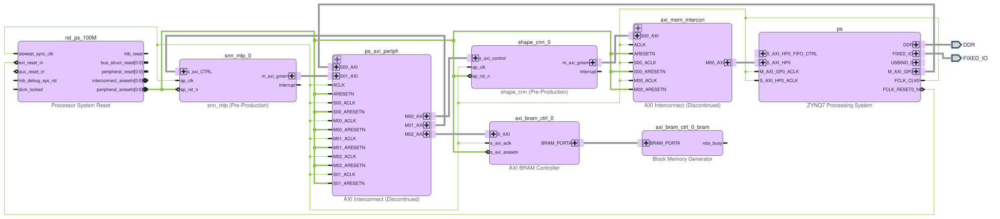

These match the build that ran on the board on 16 Nov 2026: one bitstream with both accelerators, 1200 test images, CNN 100 %, SNN 97.92 %.
The PC sends raw images over UART. The ARM CPU does the preprocessing and controls the two HLS accelerators. Each accelerator reads its input as an AXI master from a different memory.
Exported directly from the built project (vivado/out/system_bd.svg). Scroll sideways to follow it. The SNN's m_axi_gmem enters the CPU interconnect on S01_AXI; that connection is the fix that made the SNN work on the board.

| Block | Address (CPU view) | Role |
|---|---|---|
shape_cnn_0 | 0x4000_0000 · 64 KB | CNN control registers: start, input address, prediction, 4 logits |
snn_mlp_0 | 0x4001_0000 · 64 KB | SNN control registers: start, feature address, prediction, 4 scores |
axi_bram_ctrl_0 | 0x4002_0000 · 8 KB | Feature BRAM; the SNN sees it at the same address |
ps/S_AXI_HP0 | 0x0000_0000 · 512 MB | DDR, as seen by the CNN's memory port |
Four 3×3 convolution blocks with batch-norm folded into the weights, ReLU, and 2×2 max-pooling after the first three. Global average pooling and one dense layer give 4 logits. Heights are to scale with the feature-map rows; widths grow with the channel count.
HLS kernel: Q8.8 activations (ap_fixed<16,8>), 18-bit weights, 32-bit accumulators. Each block is one loop pipelined at II = 1 that computes one 3×3 tap per cycle for all input channels in parallel, with the max-pool fused into the loop. The image is copied from DDR into on-chip BRAM first. Latency 2.84 ms; 9.8 k LUT, 53 DSP.
The CPU turns the image into 512 spike counts. The FPGA runs a three-layer leaky integrate-and-fire network for one time step (T = 1). The hidden layers fire spikes; the 4 output neurons are read out as membrane potentials.
The lecture encoding (ON/OFF of Gx+Gy at the 90th percentile on a fixed grid) reached 31 % on this dataset: noise filled the percentile, and Gx+Gy cancels on 45° edges. The new encoding adapts to contrast and normalises position and size. 3.6 k LUT, 8 DSP.
PS UART0 over the board's USB port, 4 000 000 baud, 8N1, no flow control. Multi-byte fields are little-endian. CRC-16/CCITT-FALSE covers everything after the two sync bytes.
Other commands: 0x01 CNN only, 0x02 SNN only, 0x10 echo (UART test), 0x11 info. Status codes: 0 OK, 1 bad CRC, 2 bad length, 3 bad command, 4 network absent, 5 IP timeout.
Mean over all 1200 test images on the board. The bar is to scale: one full round trip takes 30.7 ms, about 31 images per second.
UART dominates: 12.2 ms of wire time for 4807 bytes at 4 Mbaud, against 3.1 ms of total CNN work and 2.0 ms of total SNN work. The SNN accelerator is 14× faster than the CNN, but its CPU preprocessing takes 9× longer than the SNN inference itself.